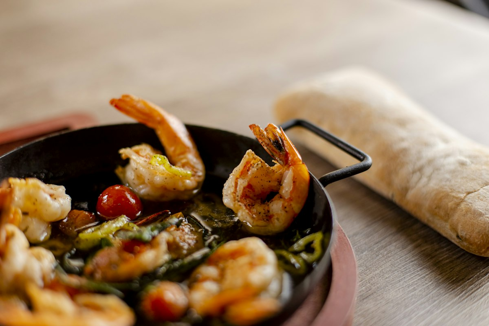

Lemon Herb Shrimp
Juicy shrimp in a bright lemon and white wine pan sauce that comes together in under ten minutes.

Shrimp cook so fast that the sauce has to be ready to meet them. Here the wine reduces first, the shrimp go in for barely three minutes, and cold butter whisked in at the end pulls it into something glossy. It is a dinner-party dish that happens to take ten minutes.
Ingredients
Quantities scale automatically. Cooking times stay the same.
Shrimp
Pan sauce
Equipment
- Large skillet
- Tongs
Method
-
1
Prep the shrimp
Pat the shrimp very dry and season with the salt and pepper. Dry shrimp sear; wet shrimp steam and turn rubbery.
-
2
Sear fast
Heat the olive oil in a large skillet over medium-high until shimmering. Add the shrimp in one layer and cook 90 seconds per side, until just pink and opaque. Move them to a plate immediately.
-
3
Start the sauce
Lower the heat to medium, add the garlic to the same pan and cook 30 seconds until fragrant but not coloured.
-
4
Deglaze
Pour in the wine and scrape up everything stuck to the bottom. Simmer 2-3 minutes until reduced by half.
-
5
Mount the butter
Take the pan off the heat and whisk in the cold butter one cube at a time, along with the lemon juice and zest, until the sauce is creamy and emulsified.
-
6
Return and finish
Slide the shrimp and any resting juices back into the pan, add the herbs and chilli flakes, and toss for 30 seconds to warm through. Serve with bread or over pasta.
Cook’s tips
- Shrimp are done the moment they curl into a loose C. A tight O means overcooked.
- Cold butter, added off the heat, is what emulsifies the sauce. Melted butter will split it.
- Cook in two batches if your pan is crowded. Crowded shrimp release water and boil.
Variations
- Add halved cherry tomatoes with the garlic for a lighter, fresher sauce.
- Toss with linguine and a splash of pasta water to make it scampi.
- Swap the shrimp for scallops, searing them 2 minutes per side.
Storage and make-ahead
Best the day it is made. Leftovers keep 1 day and are better eaten cold over salad than reheated, since shrimp toughen on a second cooking.
Nutrition per serving
| Calories | 296 kcal |
|---|---|
| Protein | 31 g |
| Carbohydrates | 5 g |
| Fat | 16 g |
| Fibre | 1 g |
| Sugar | 1 g |
| Sodium | 720 mg |
Nutrition is estimated from ingredient averages and will vary with brands and portioning.